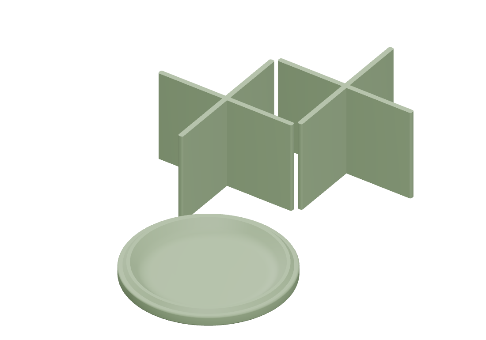

Cardboard can
Print plates
Individual components

About this print
Extra parts for the cardboard-spool storage container: a bottom and two dividers. Use them with the cardboard core from a Bambu filament spool and the lid and ring on Plate 1.